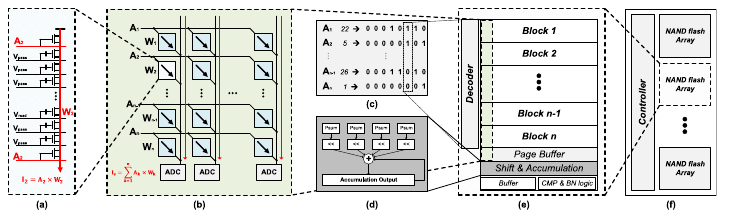
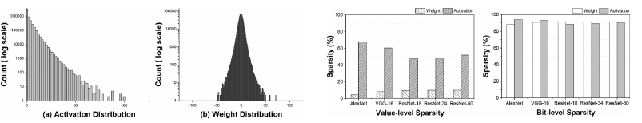
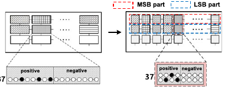
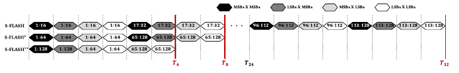

A NAND Flash based DNN Accelerator Exploiting Bit-Level Sparsity
Each string produces a single read current and we use that as the processing element.

99% of multiplications are zero

Ex: -15 (00000000, 00001111) is represented as “00000001”, “00010000”
Isolate MSBs and LSBs by assigning spaces in different rows of the string

Increase processing units by increasing no of activation data passed to S-FLASH decoder
